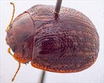
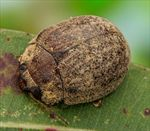
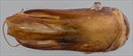
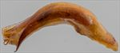
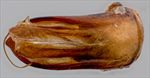
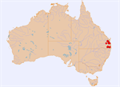

Click on images to enlarge
{kind=link}

Male, Swan Ck, Yangan, S.E. Queensland
{kind=link}

Fenale, Upper Kandanga, S.E. Queensland
{kind=link}

Aedeagus, dorsal view (Woolooga, S.E. Queensland)
{kind=link}

Aedeagus, lateral view (Woolooga, S.E. Queensland)
{kind=link}

Aedeagus, dorsal view - apical region (Woolooga, S.E. Queensland)
{kind=link}

Distribution
Name
Trachymela sp. Ta44
Reference specimen
1998-0400, Dagg Falls, Killarney, SE Queensland.
Adult Description
Length: ♂ 7.4–8.4 mm (n=17), ♀ 7.7–9.3 mm (n=21).
Colouration:
- Head: mid- to dark- or reddish-brown, mandibles with black tips; antennomeres 1–4 straw-brown, 5–11 slightly or much darker brown, either all of similar shade or grading darker towards distal antennomeres, individual antennomeres unicolorous or with proximal extreme slightly paler.
- Pronotum: brown, concolorous with head, with one or two black oval maculae on each side of centre usually present, the larger one approximately in line with the inside edge of eye, a smaller one equidistant between it and the lateral margin is often absent, these maculae may be indistinct or, rarely, completely absent.
- Scutellum: completely dark-brown or black.
- Elytra: brown, concolorous with pronotum, with a number of fractionally lighter-coloured longitudinal rows corresponding to raised interstices, between these lighter-coloured interstices darker or black maculae fully or partially connect the longitudinal rows producing a chequerboard-like pattern of two slightly differing shades, rarely whole elytra is a single shade; punctures dark-brown, humeral callus concolorous with surrounds.
- Venter & Legs: thoracic ventrites dark-brown, rarely almost black, abdominal ventrites fractionally paler, legs of slightly lighter shade, inside surface of elytral epipleurae brown, rarely with posterior half partially black.
- Cuticular Wax: generally sparsely to moderately densely distributed, with wax often slightly more dense on alternate interstices, giving a faintly striped appearance which is enhanced by the dark patches on the elytra on the slightly less densely covered interstices.
Morphology:
- Head: punctures moderately and often quite unevenly sized (pd ≈ 2–3× ef) and evenly to quite unevenly and densely distributed. Antennae moderately long (AL/BL: ♂ 42–48%, ♀ 38–42%), filiform.
- Pronotum: almost evenly curved transversely, foveal depression absent or very weak, a small round elevation usually present in line with centre of each eye, a very shallow but larger elevation on each side of discal area, puncturation usually clearly impressed, a mix of sizes present with the largest similar in size to those on head, slightly to quite unevenly distributed and moderately dense in discal area, becoming much coarser at lateral margins. Front margins join lateral margins in a smoothly rounded right-angle, with lateral margin curving smoothly and gradually towards rear margin.
- Scutellum: surface smooth or almost smooth, unpunctured.
- Elytra: surface evenly curved, punctures distinct and relatively evenly distributed throughout but usually less distinct near apex, with much smaller punctures scattered sparsely on the interstices, verrucae absent or they are small and shallow, interstices often form longitudinal, slightly elevated ridges that are rendered more prominent by their lighter colouration, surface continuous, rarely slightly discontinuous, under humeral callus. Vertical extension of epipleurae moderate (HCE/PW = 0.32–0.34).
- Venter: prosternal process narrow, sometimes very narrow, anteriorly or, less often, almost parallel-sided, lightly closed anteriorly, short setae present sparsely over prosternal process and mesoventrite, a single seta on anterior and median trochanter; front edge of metaventrite beveled, truncate; inner edge of epipleura lacking setae.
Male Genitalia (Aedeagus):
- Dimensions: quite long (LPE = 34–38% BL).
- Dorsal view: shaft narrowing slightly and smoothly from base towards middle then broadening again to the widest point about 20% from apex before the sides converge towards apex in a smooth wide arc, dorsal surface smoothly curved with short dorso-median channel, dorsolateral channels converge at rear to form a large ostial region with dorsal ostial processes extending far towards apex, tip protruding slightly, ostial opening large.
- Lateral view: shaft almost evenly and quite strongly curved throughout its length, thinning towards apex over 15–20% of length, tip small and deflexed, protruding segment of flagellum is almost straight, very thin and whip-like.
Immature Stages
Unknown.
Similar species
- Ta70: individuals of Ta70 are on average slightly smaller than typical specimens of Ta44, but there is considerable overlap in the size distribution. In practice, females can be almost impossible to distinguish. The aedeagus of the two species is very different.
Notes
- Distribution & Abundance: This is a relatively commonly found species in S.E. Queensland into the coastal regions of northern New South Wales, but seems absent from the adjacent New England Tablelands.
- Host Associations: All host records for this species (a total of 28) are from Angophora sp.
Copyright © 2026. All rights reserved.